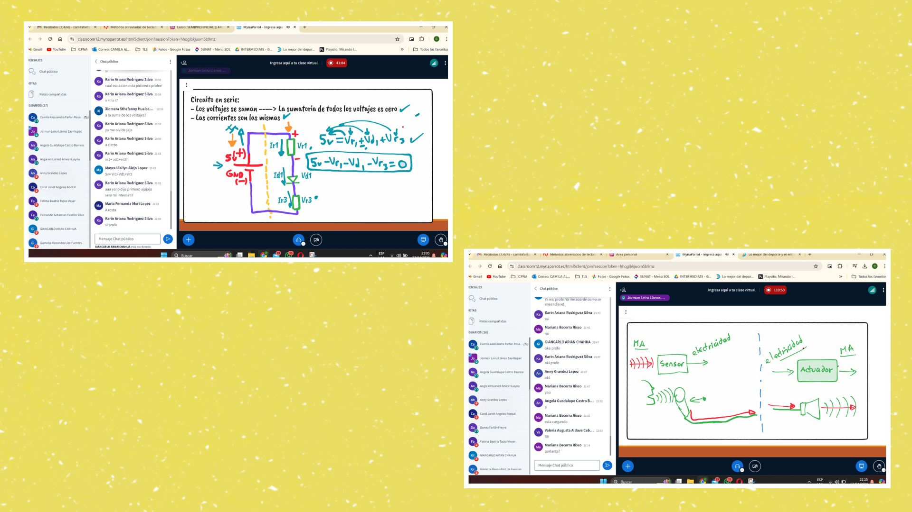

Sesión 11: Descubriendo los Circuitos y la Programación
En la undécima clase del curso,comenzamos con un repaso de los conceptos aprendidos en la sesión anterior para asegurarnos de consolidar nuestro entendimiento y aclarar algunas dudas. Ya con eso entendido, el profesor nos introdujo en el mundo de los circuitos eléctricos, explicando las diferencias entre los circuitos en serie y en paralelo, así como los elementos que los componen.
Utilizando gráficos ilustrativos, nos mostró cómo identificar visualmente cada tipo de circuito y cuáles son las características distintivas de cada uno. Luego, nos sumergimos en la aplicación práctica de estos conceptos utilizando Tinkercad, donde realizamos ejemplos con elementos como resistencias y baterías, y comenzamos a codificarlos.
Finalmente, el profesor nos guió a través de la utilización de funciones esenciales en Arduino, como void setup, void loop y digitalWrite, explicando cuándo y cómo utilizar cada una de ellas en los proyectos que tengamos en mente.
Esta sesión fue una inmersión profunda en los fundamentos de la electrónica y la programación, proporcionándonos las herramientas necesarias para avanzar con confianza en nuestros proyectos futuros.